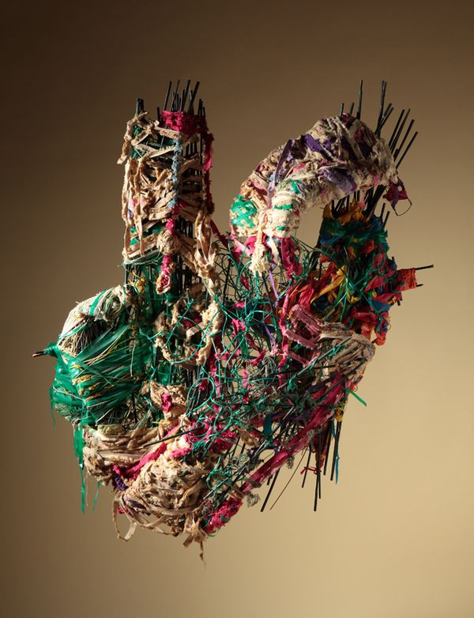
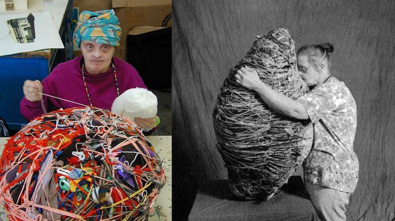

Judith Scott (1943-2005) - American fiber sculptor
Born deaf (and later diagnosed with Down syndrome) and largely non‐verbal, she found her artistic voice relatively late. Her sculptures—bold, abstract works wrapped in yarn and materials—are internationally recognised and featured in major museum collections.
Her story is particularly powerful for how art became a form of communication beyond conventional language.